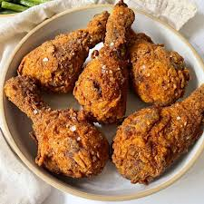

This classic buttermilk fried chicken recipe produces crispy, golden-brown
chicken with a tender interior by marinating in buttermilk

Ingredients
Chicken: 1 whole chicken (approx. 4 lbs), cut into pieces.
Marinade: 2 cups buttermilk, 2 tablespoons hot sauce (optional).
Dredge: 2 cups all-purpose flour
1 cup cornstarch
1 tablespoon baking powder
2 teaspoons paprika
2 teaspoons garlic powder
2 teaspoons onion powder, salt, and black pepper to taste.
Instructions
Marinate: In a large bowl, mix chicken with buttermilk and seasonings
(salt, pepper, garlic/onion powder). Cover and refrigerate for at least
1 hour, preferably overnight.
Prep Dredge: In a separate bowl, whisk together the flour, cornstarch,
baking powder, and spices.
Coat: Remove chicken from the marinade, allowing excess to drip off.
Dredge in the flour mixture, pressing firmly to ensure a thick coating.
Rest: Let the coated chicken sit on a baking sheet for 15-30 minutes,
allowing the flour to become paste-like, which helps it adhere
Fry: Heat 1-2 inches of oil in a large cast-iron skillet or Dutch oven
to 350 F (175 C). Fry in batches for 7-10 minutes per side (or until
golden brown and 165 F internally).
Drain: Place fried pieces on a wire rack to drain, not paper towels, to
keep the bottom crust crispy.